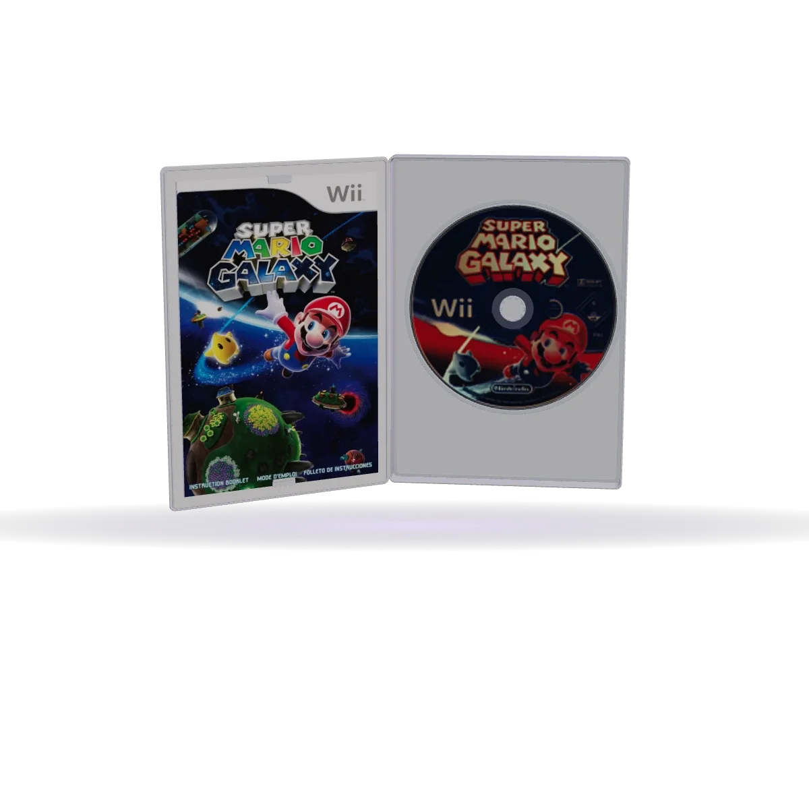
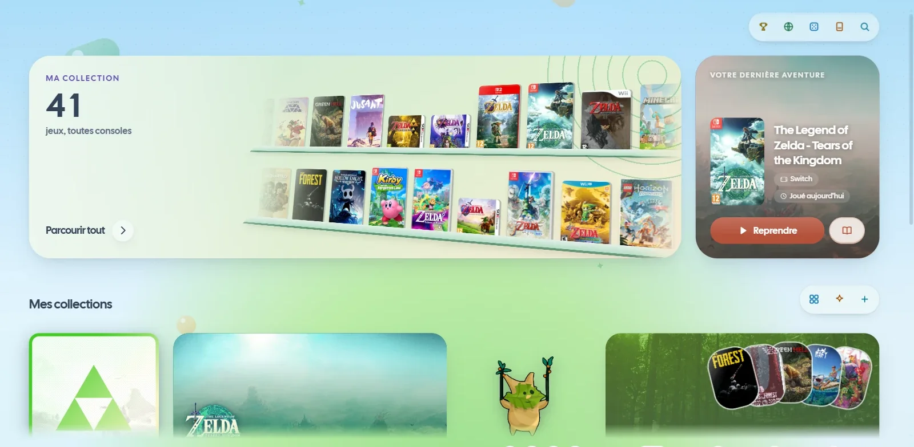
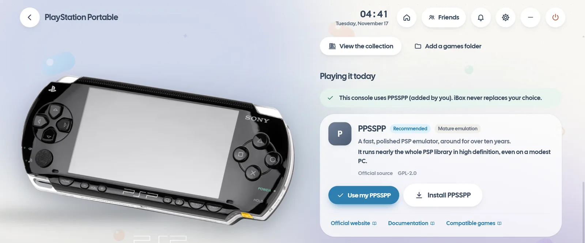

Vos jeux méritent mieux qu’une liste.
Retrouvez le plaisir d’une vraie collection. Vos jeux PC et consoles, réunis dans des boîtiers 3D que vous pouvez manipuler.
Gratuit et open source. Windows 10 et 11, Steam Deck en essai.

Cinq jeux, cinq formats de boîtier, tels qu’iBox les affiche.
Survolez un boîtier, faites-le tourner, cliquez pour l’ouvrir.
Le boîtier redevient réel.
La face
La jaquette d’origine, sous le film du boîtier.
La tranche
Celle que l’on cherche du doigt sur l’étagère.
Le dos
Le résumé, les captures, le code-barres. Tout y est.
L’ouverture
La face pivote sur sa charnière, comme la vraie.
Le disque
Il se dégage du moyeu et tourne sous la lumière.
Le livret
Quand le manuel existe, il attend à sa place, prêt à être feuilleté.
Super Mario Galaxy, Wii, 2007. Faites glisser le boîtier pour le tourner vous-même.
Le boîtier redevient réel.

La face
La jaquette d’origine, sous le film du boîtier.
La tranche
Celle que l’on cherche du doigt sur l’étagère.

Le dos
Le résumé, les captures, le code-barres. Tout y est.

L’ouverture
La face pivote sur sa charnière, comme la vraie.

Le disque
Il se dégage du moyeu et tourne sous la lumière.

Le livret
Quand le manuel existe, il attend à sa place, prêt à être feuilleté.
Super Mario Galaxy, Nintendo Wii, 2007.
Chaque console a son format.
Sept formats de boîtier, modélisés à leurs dimensions réelles. Choisissez un jeu et prenez-le en main.

Super Mario Galaxy
Nintendo Wii, 2007
- Boîtier
- 136 × 191 × 14 mm
- Support
- disque
Faites glisser pour tourner le boîtier.
iBox reconnaît 26 consoles, en plus de vos jeux PC : Atari 2600, NES, Master System, Mega Drive, Game Boy, Super Nintendo, Game Gear, Jaguar, PlayStation, Saturn, Nintendo 64, Game Boy Color, Dreamcast, PlayStation 2, GameCube, Game Boy Advance, Xbox, DS, PSP, Xbox 360, Wii, PlayStation 3, 3DS, Wii U, Switch, Switch 2. Les boîtiers GameCube, PlayStation et PlayStation 2 sont eux aussi modélisés dans l’application.
Tous vos jeux, une seule collection.
Vos jeux Steam, Epic Games et GOG rejoignent ceux de vos consoles. Vous les rangez par collections, iBox les pose sur l’étagère.
Une bibliothèque qui vous ressemble.
Douze palettes, un mode nuit, des collections illustrées à votre goût. Voici quatre exemples de configuration, capturés dans iBox.



Palette Pêche. Mario, Hyrule, Wario et les consoles de poche, chacun sa collection.
Palette Sable. Les jeux Steam rangés par séries, les plus exigeants en tête.
Palette Lavande, de nuit. Final Fantasy, pixel art et épopées de cent heures.
Palette Forêt. Zelda de la Wii à la Switch, sur la même étagère.
Exemples de configuration réalisés pour cette page. Ce ne sont pas des comptes de joueurs.
Jouez, iBox s’occupe du reste.
iBox lit vos bibliothèques Steam, Epic Games et GOG, avec votre temps de jeu.

Un clic par console, depuis la source officielle. Si vous avez déjà le vôtre, iBox le garde.

Des réglages adaptés à votre PC, jeu par jeu, avec un aperçu avant chaque changement et un retour arrière.

Toute l’interface se pilote à la manette, au clavier ou à la souris, de jour comme de nuit.

Vos succès Steam et RetroAchievements au même endroit, et les prochains à portée de main.

Remote PlayExpérimental Partagez l’écran d’un jeu avec vos amis, jusqu’à six joueurs, chacun avec sa manette, d’ordinateur à ordinateur. Comment ça marche
Une place dans votre salon.
En plein écran sur la télévision ou dans vos mains, c’est la même bibliothèque.
Windows
Windows 10 et 11, 64 bits. La version complète : bibliothèque, émulateurs, overlay en jeu et Remote Play.
Steam DeckEn essai
Une AppImage pensée pour le Mode Jeu : une seule fenêtre, les commandes du Deck, iBox dans votre bibliothèque Steam.
Encore réservé à Windows : héberger une partie Remote Play, l’overlay en jeu et les boutiques sans version Linux (EA, Ubisoft, Xbox, Battle.net).
Votre collection vous attend.
Windows 10 et 11, 64 bits
AppImage, Steam Deck et Linux 64 bits
Gratuit et open source, sous licence MIT. Sans compte, sans publicité.